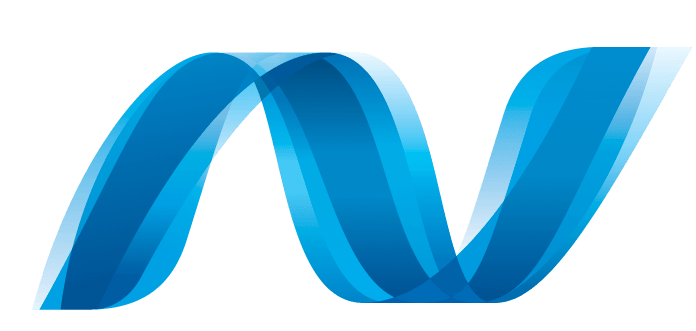

Hey! I'm Niklas Werthmann, a fullstack developer and Open-Source contributor
I'm Niklas Werthmann, a self-driven software engineer specializing in fullstack development and data science. I focus on building interactive web applications and applying machine learning to solve problems.
I'm currently pursuing a bachelor's degree in computer science with focus on data science at the Duale Hochschule Baden-Württemberg (DHBW) as a dual student from Mercedes-Benz.
Outside of work
In my free time, I stay active with strength training, aiming for at least three sessions a week, with a personal goal of 4-5. I’m also working on personal projects like this website.
I also enjoy playing chess. The picture below shows the final game of the 2023 Schnellschachmeisterschaft HSK, where I defeated Bernhard Rittmeier, who has been one of the strongest players in North Rhine-Westphalia for the past 40 years.
Still, I like to spend most of my free time with my lovely girlfriend, Melissa.
 Python
Python HTML, CSS & JS
HTML, CSS & JS C#
C#- ASP.NET
 SQL
SQL Flask
Flask Git
Git- Flutter
 Dart
Dart